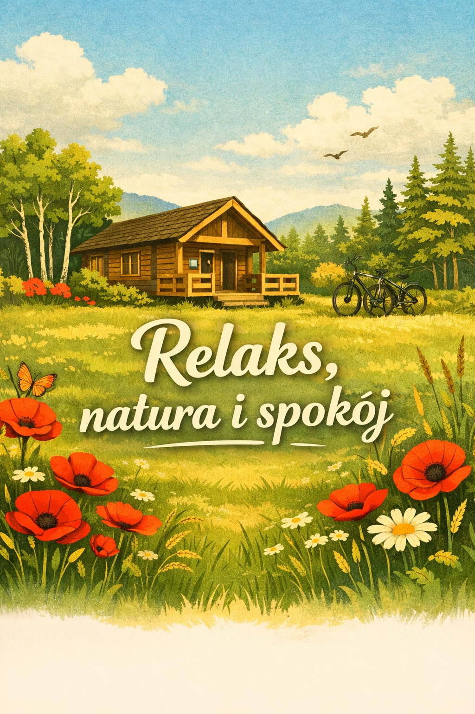

Prywatna działka 0.7 ha, wyjątkowy klimat, wieczorne ogniska, trasy rowerowe i pełna cisza — kilka minut od Kazimierza Dolnego.
Miejsce stworzone dla osób szukających ciszy, prywatności i klimatu premium blisko natury.
Cały teren i domek wyłącznie dla gości. Bez tłumu i sąsiadów za ścianą.
Poranna kawa, hamaki, śpiew ptaków i wieczorne ognisko pośród natury.
Wisła, lessowe wąwozy, rowery, restauracje i wyjątkowy klimat regionu.



Ciepłe światło, cisza lasu i pełny odpoczynek od miasta.
Okolica oferuje jedne z najpiękniejszych tras rowerowych Lubelszczyzny.
Kawa na tarasie i śpiew ptaków zamiast miejskiego hałasu.
Cały domek i teren wyłącznie dla Ciebie.
„Najbardziej klimatyczne miejsce, w jakim byliśmy od lat.”
„Prywatny las robi niesamowity klimat. Wieczory przy ognisku były genialne.”
„Wygląda jeszcze lepiej niż na zdjęciach.”
Napisz do nas i sprawdź dostępność terminów.